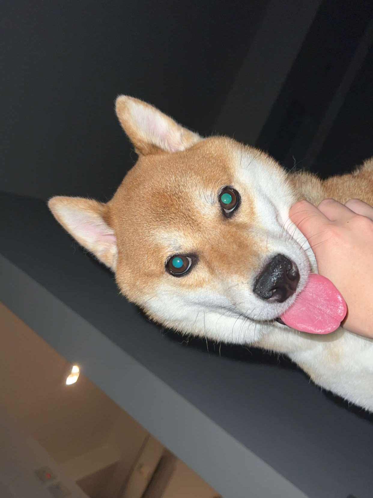

The problem
AI assistants are powerful, but interacting with them still often requires typing, waiting, and reading. That makes AI less convenient when users are multitasking, moving around, cooking, working, or just want a quick spoken answer.
AI assistants are powerful, but interacting with them still often requires typing, waiting, and reading. That makes AI less convenient when users are multitasking, moving around, cooking, working, or just want a quick spoken answer.
VERA turns AI into a more natural voice-first experience. Users can speak to the assistant, receive spoken responses, and interrupt while it is talking instead of waiting for a full response to finish.
This makes VERA feel less like a chatbot and more like an assistant.
VERA uses a speech-to-text → LLM → text-to-speech pipeline to support spoken conversations.
While VERA is speaking, it continues listening for user interruption so the conversation can be corrected or redirected mid-response.
Users can switch between continuous listening, push-to-talk, and keyboard mode depending on the environment.
VERA can answer utility questions like time, date, weather, countdowns, news, and stock prices through voice. For richer interactions, the prototype currently includes dedicated panels for news and music.
My name is Nam. I'm a third-year undergraduate student majoring in Data Science at the University of California, Irvine. Over the past few years, I have developed a strong interest in machine learning and artificial intelligence, which led me to participate in Kaggle competitions and work on transformer models.
These experiences ultimately brought me to this project VERA. My goal with VERA is to build a functional conversational AI that integrates modern machine learning techniques with software engineering best practices to deliver a seamless user experience.
